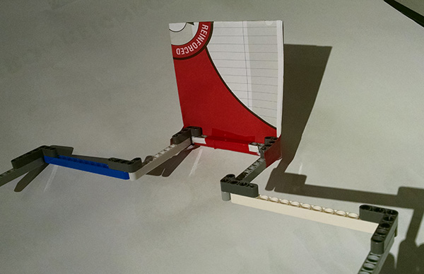

Written by Caitlin Rogers
Task: Prototype a backboard for scoring in the 90 cm goal
Since our ski lift sort of launches the scoring balls when they reach the top, we had to create a backboard for the balls to bounce off of and aim at the tube
Reflections:
We made this first design out of lego beams around the idea that it would have to rotate out of the way before each match.
We mock mounted it to the axle that the idler for the ski lift was on and went from there. The design lets the ski lift chairs/hooks pass through without
getting hooked, and, for testing purposes, a piece of paper folded up to about twice the size of a large ball serving as the backboard.

What we didn't expect though was how perfectly this test would work out. With extremely good luck the ball scored 100% of each test.
The balls bounced off the paper backboard, which absorbed enough shock to slow down the balls and bounce them forward a bit.
Because the paper had slowed them down though, the ski lift had enough time to put the same chair that the ball had ridden up on at the right point on the back for the ball to bounce off the back and land in the tube.
We filmed it. It was amazing.
Sadly this was only a first prototype, and the paper wouldn't have survived a competition. Max will be working on a model of a backboard that we will print and mount permanently.